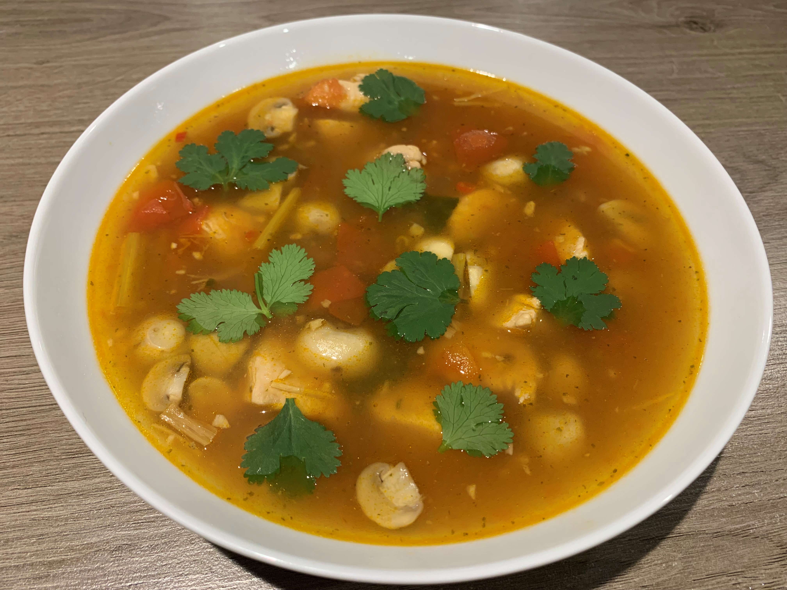

Tom Kha originated in Thailand, and is one of the countries most famous dishes. This flavoursome soup traditionally consists of: Bird's Eye Chilli's, Kaffir Lime Leaves, Mushrooms, Coconut Milk, Galangal, Lemongrass, and Chicken. These ingredients combine to create a wonderfully aromatic dish which is bursting with flavour, as well as being highly nutritious.
Watch the video below for the perfect example of how to make a Tom Kha Gai!
Below, I will detail the ingredients and method for making my take on Tom Kha Gai. I removed the Coconut Milk to give it a thinner, less creamy consistency but this is entirely based on preference. Most ingredients will be available at your local supermarket, however, some may be difficult to find.
Below, is a picture of my finished Tom Kha. As you can see, my version is quite a clear soup. Not using coconut milk allowed for this thinner consistency which I chose due simply to preference. The lime leaves especially add a huge flavour and fragrance to this dish, making it a very pleasant experience to cook as well as to eat. I would highly recommend this dish due simply to it's bold flavours. Hover over the image to enlarge!
Click the button below to keep track of the number of times you have made the dish on this page. The number of times you click the button will be stored for the next time you come back to the site!